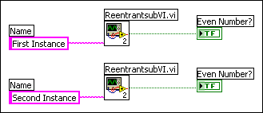

By default, LabVIEW automatically uniquely identifies each timed structure you place on the block diagram with a name, which appears in the Structure Name text box of the Configure Timed Loop or Configure Timed Loop with Frames dialog box or the Sequence name text box of the Configure Timed Sequence dialog box. You can rename the timed structure by entering a new name in the text box. You can use the unique name of a timed structure with the VIs on the Timed structures and VIs palette to programmatically stop the structure and to synchronize a group of timed structures to use the same start time.
If a reentrant VI includes a timed structure and you use two or more instances of that reentrant VI as subVIs on a block diagram, you can programmatically change the name of the timed structure for each instance of the reentrant VI. To configure the reentrant VI, connect an input terminal on the connector pane to a string control wired to the Name input of the Timed Loop or Timed Sequence structure on the block diagram. On the block diagram where two or more instances of the reentrant VI are used as subVIs, wire unique string values to the Name input on the reentrant subVIs to uniquely identify each timed structure within each instance of the reentrant subVIs. For example, the following block diagram includes two instances of the same reentrant VI as subVIs. The Name string constants wired to the instances of the subVIs pass two different names to the Timed Loop in the block diagram of the reentrant VI each time the block diagram executes.
